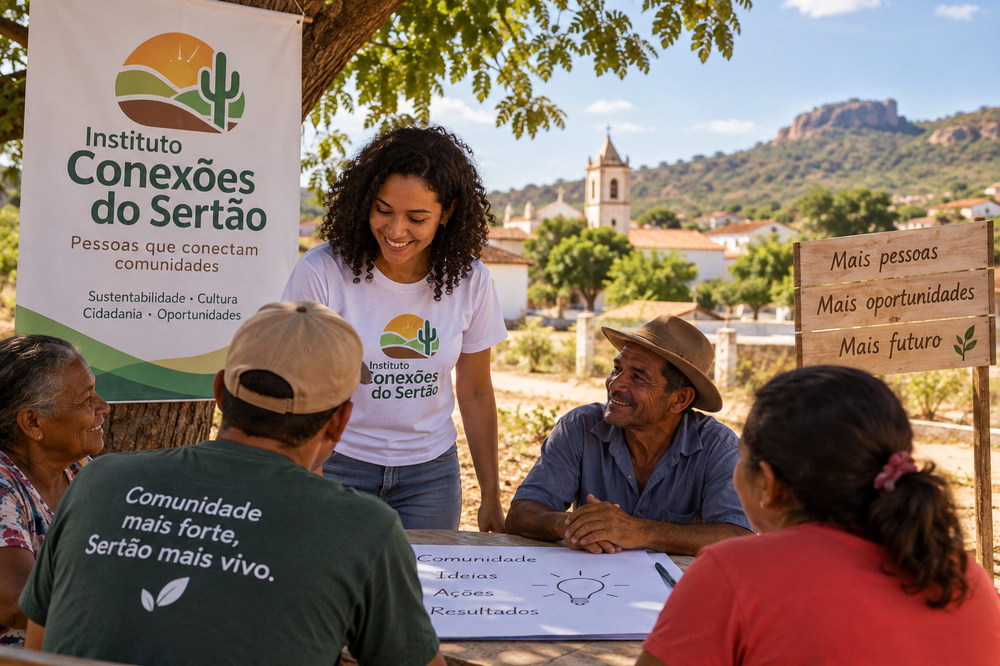

Missão
Promover o desenvolvimento social e comunitário por meio de iniciativas que conectem pessoas, instituições e comunidades.
O Instituto Conexões do Sertão é uma organização da sociedade civil localizada em Cajazeiras, Paraíba, que desenvolve iniciativas voltadas ao fortalecimento das comunidades, à sustentabilidade e à valorização da cultura local.
Quero participar
O Instituto Conexões do Sertão surgiu em Cajazeiras a partir da união de profissionais, educadores e membros da comunidade interessados em desenvolver iniciativas de transformação social no Alto Sertão Paraibano.
Promover o desenvolvimento social e comunitário por meio de iniciativas que conectem pessoas, instituições e comunidades.
Ser referência no Alto Sertão Paraibano em ações de sustentabilidade, valorização cultural e fortalecimento comunitário.
Cidadania, sustentabilidade, diversidade, solidariedade, participação social e respeito à cultura local.
Cajazeiras, Paraíba
E-mail: contato@conexoesdosertao.org.br
Telefone: (83) 99999-0000
Você também pode contribuir para o fortalecimento das comunidades do Sertão. Seja voluntário ou apoie nossas iniciativas.
Quero participar